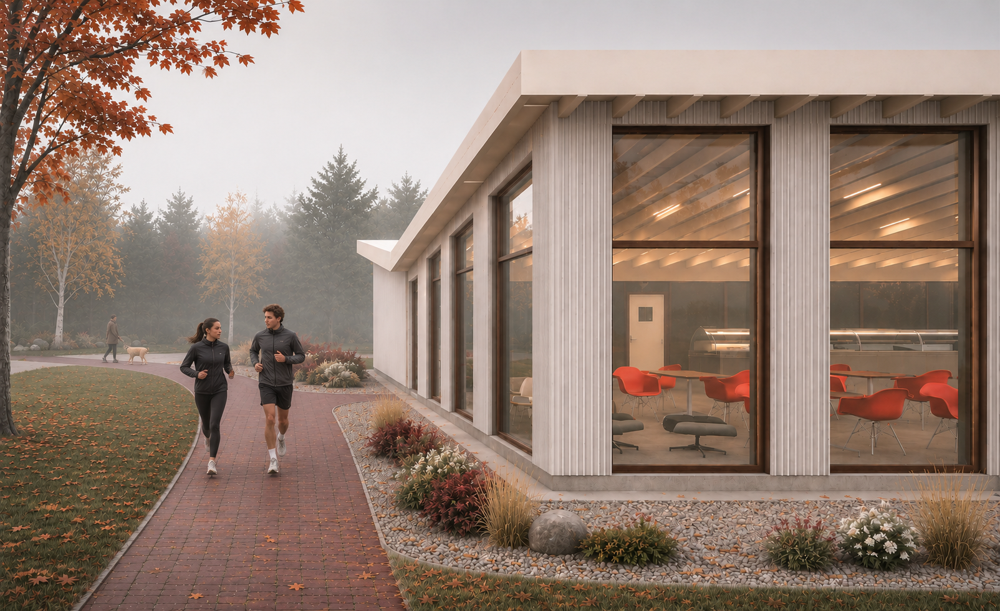
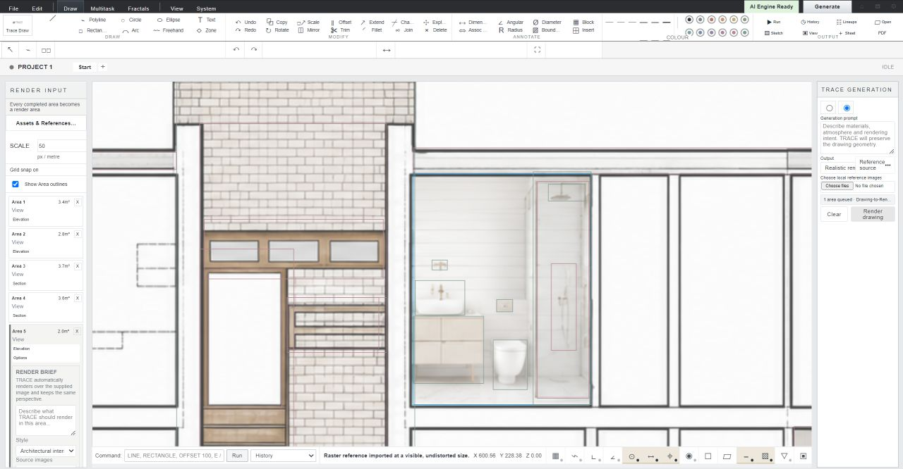
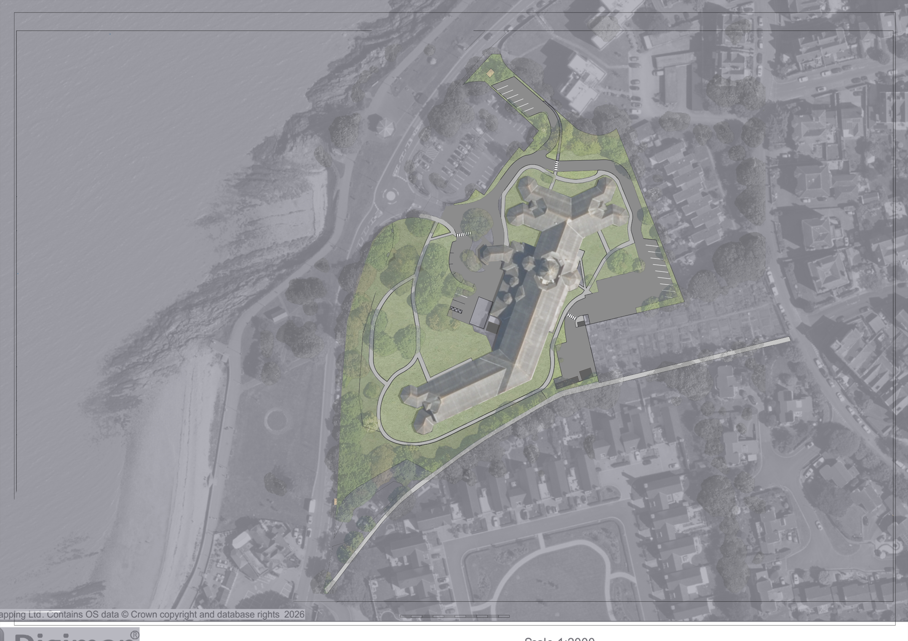
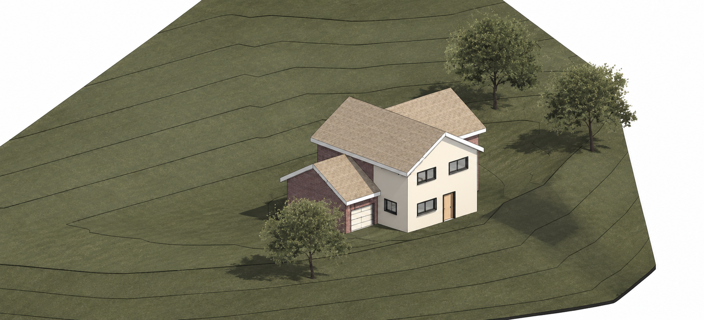

Apollo+ Photography2024
Apollo+ Photography2024

Countryside Café+ Professional2020 Climbing Centre+ Professional2021
Climbing Centre+ Professional2021
 House Competition+ Weston University2021
House Competition+ Weston University2021
 MAup 1+ Newcastle University2022
MAup 1+ Newcastle University2022

TRACE+ Concepts2026 MAup 4+ Newcastle University2025
MAup 4+ Newcastle University2025
 MAup 2+ Newcastle University2024
MAup 2+ Newcastle University2024
 MAup 3+ Newcastle University2025
MAup 3+ Newcastle University2025

Hawthorns+ Professional2026 Drystone Walling+ Professional2025
Drystone Walling+ Professional2025

Construction Design pt1+ Weston University2020 Construction Design pt2+ Weston University2021
Construction Design pt2+ Weston University2021